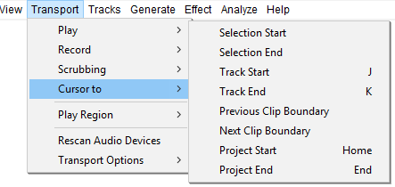
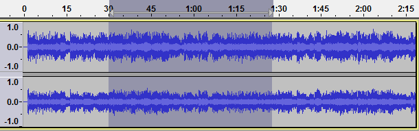
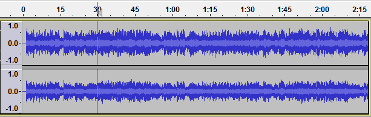
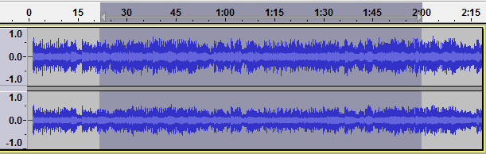
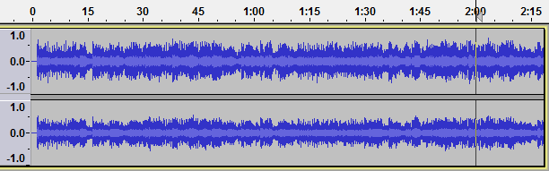
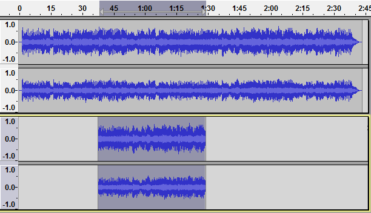
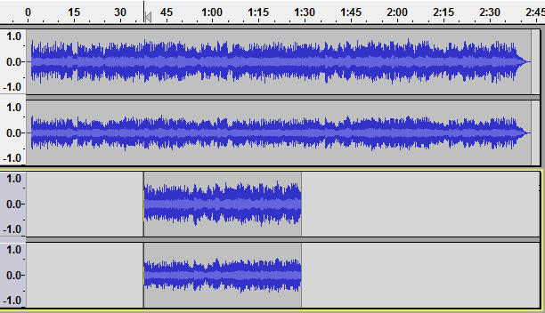
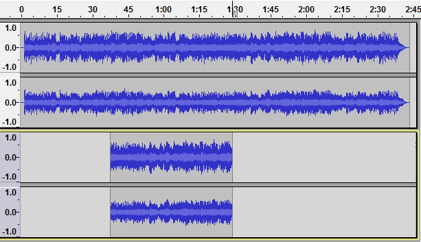

Transport Menu: Cursor to
- Click, or hover, on any menu item in the image to read about that command. Skip the image
- 
Selection Start
When there is a selection, moves the cursor to the start of the selection and removes the selection without changing the zoom level. If the left edge of the selection is not visible, scrolls the display so that the cursor is visible.
- 
Cursor moved to the start of the previously selected region with the selection removed.
- 
Selection End
When there is a selection, moves the cursor to the end of the selection and removes the selection without changing the zoom level. If the right edge of the selection is not visible, scrolls the display so that the cursor is visible.
- 
Cursor moved to the end of the previously selected region with the selection removed.
- 
Track Start J
Moves the cursor to the start of the selected track, removing any selection. If the left edge of the track is not visible, scrolls the display so that the cursor is visible.
- 
The shorter track was the one selected, so the cursor is moved to the 38 second mark at the beginning of that track with the selection removed.
- 
Track End K
Moves the cursor to the end of the selected track, removing any selection. If the right edge of the track is not visible, scrolls the display so that the cursor is visible.
- 
Operating on the same track selection as above, the cursor is moved to the 1:28 mark at the end of the shorter selected track with the selection removed.
Previous Clip Boundary
Moves the cursor position backwards to the previous clip boundary.
- If the cursor is inside a clip, but not exactly on the left boundary, this command will move the cursor to the left boundary of the clip.
- If the cursor is exactly on the left boundary of a clip, this command will move the cursor to the right boundary of the previous clip.
- If the cursor is between clips, this command will move the cursor to the right boundary of the previous clip.
- If the cursor is at the left edge of the first clip in the track, this command does nothing.
Next Clip Boundary
Moves the cursor position forwards to the next clip boundary.
- If the cursor is inside a clip, but not exactly on the right boundary, this command will move the cursor to the right boundary of the clip.
- If the cursor is exactly on the right boundary of a clip, this command will move the cursor to the left boundary of the next clip.
- If the cursor is between clips, this command will move the cursor to the left boundary of the next clip.
- If the cursor is at the right edge of the last clip in the track, this command does nothing.
Project Start Home
Moves the cursor to the beginning of the project. This is useful if you want to play everything, or record a new track starting from the beginning. Same as clicking the Skip to Start button  in Transport Toolbar.
in Transport Toolbar.
Project End End
Moves the cursor to the end of the project. Same as clicking the Skip to End button  in Transport Toolbar.
in Transport Toolbar.